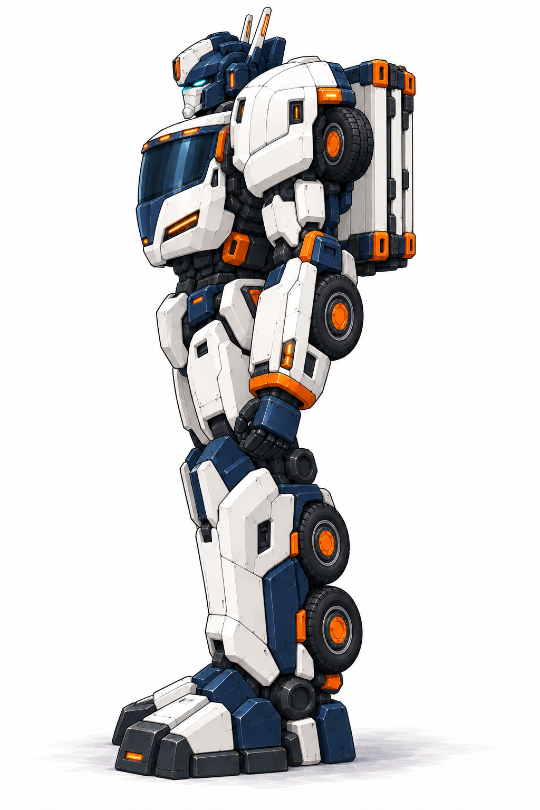
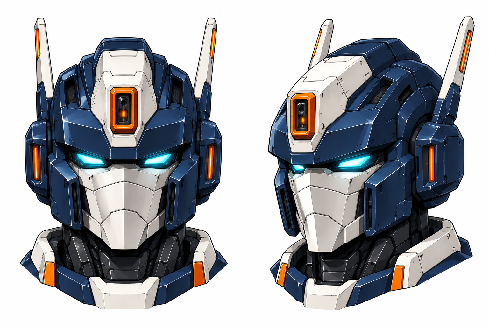
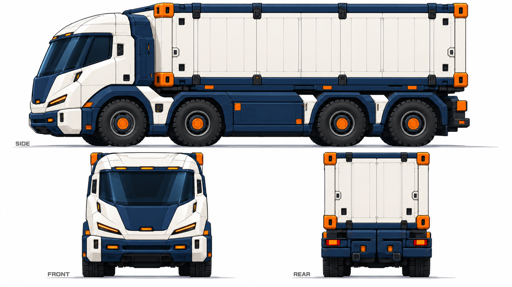
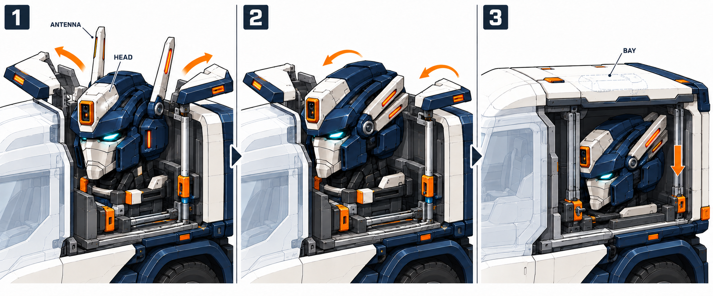
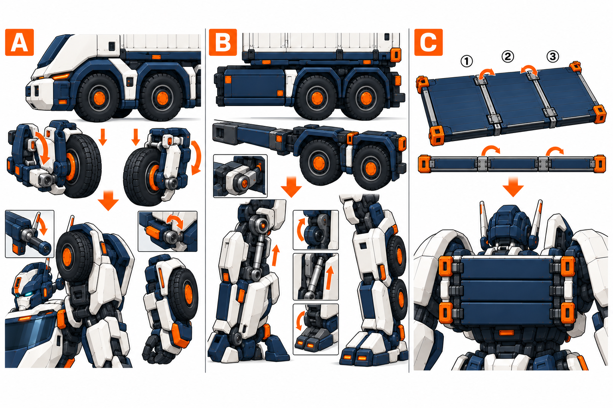
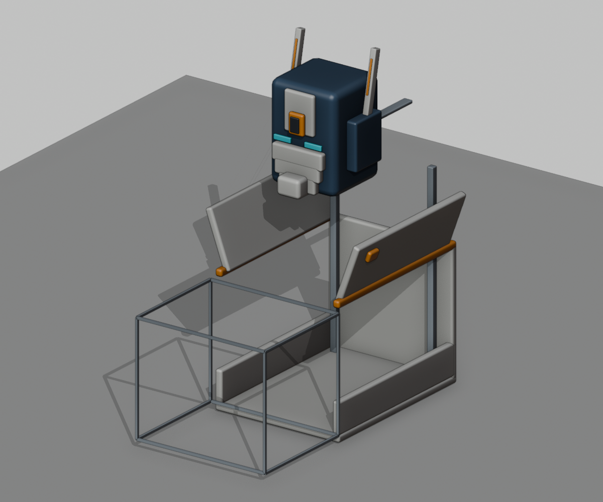
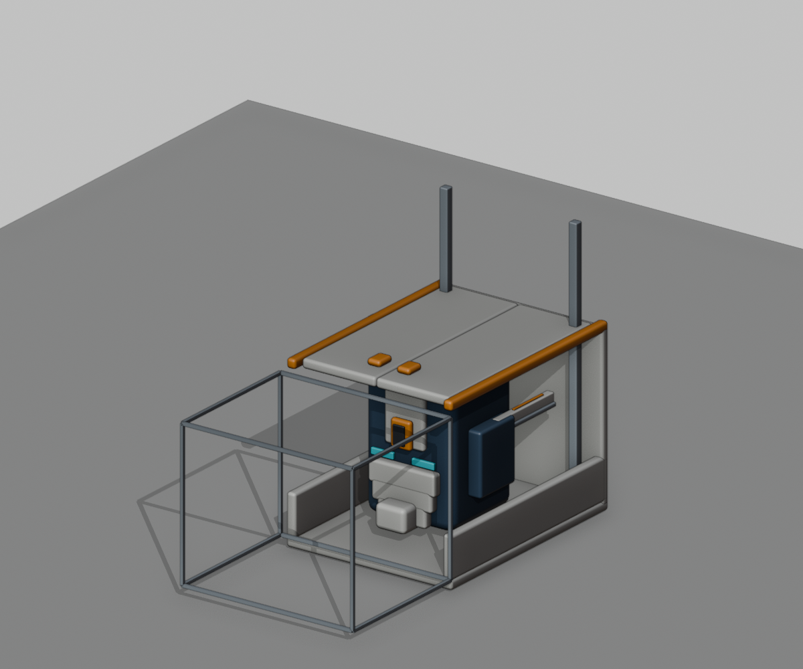

货柜领袖：指定头部、长腿身形与可变结构
以用户附图的头型和原眼形为准，新增短厚前凸的勇者式颏甲。头部纵向体积与整机头身大小分别处理，身体沿用原未来货车人形的长腿尺度。
当前：抬出头颈，打开肩胸
沿用户肯定的斜侧稿保留厚重体量，露出短实装甲颈部，降低肩线并调整胸甲上沿。保留原头型、双侧天线、勇者颏甲、长腿和原背架。

对照用户肯定的原稿

以下保留上一轮三视与结构；肩颈尚未同步R8。本次源稿与观察 · 内置生图实际提示词 · 体态参考：Hasbro官方擎天柱
上一轮人形正、侧、背（体态待同步）


头部：保留附图比例，增加颏甲识别点

用户指定的原头稿与比例来源

整机头身比以原未来人形为准；原头部认可不扩大为新增颏甲、三视或模型验收。
指定原图记录车形前、侧、背

头部与天线收纳
先打开分体舱盖，天线由耳后铰链向后折入导槽，头部下降并沿短滑轨退入驾驶室后方的独立设备仓。颏甲前侧和天线尾端各留收纳空间，仓体与驾驶空间分开。

轮架、腿架与货台分件

| 车形部件 | 人形去向 | 结构处理 |
|---|---|---|
| 前两轴轮组 | 每侧肩后1轮、前臂外后1轮 | 左右独立轮架、翻转臂和锁止套 |
| 后双轴与侧梁 | 每侧长腿及小腿2轮 | 膝/踝分开，内侧撑杆和足跟锁止 |
| 三片货台 | 浅背架 | 交替铰链折叠，角锁保留 |
| 后防钻梁 | 左右足跟/足掌 | 先展开脚板；前轮转位放在脚板支撑建立之后 |
| 独立货柜 | 卸在地面 | 保持完整体积，不带入背包或缩水 |
查看头仓同件草模与核对范围
这是归一化的头部包络研究，四状态使用同一颗头、两根天线和同一组舱盖。它只核对矩形头仓收纳余量，不是整机受力、驾驶室容量或完整碰撞认证。




本轮补齐的是三视与结构设计稿。各视角仍是独立绘制；详细装配、整机重心/受力和全程碰撞需要后续模型校核。